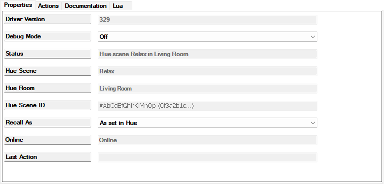
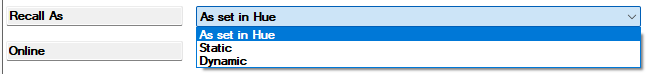

One Philips Hue scene, ordinary or time-of-day, as a Control4 dimmer. The full manual, with pictures, is the Hue Bridge device's Documentation tab.
A Hue Scene is one Philips Hue scene (a saved look for a Hue room or zone) shown as a Control4 dimmer: a tile with a slider and a percentage on Navigators and in the Control4 app. Turning it ON plays the scene on the Hue bridge, so every light of that Hue room or zone takes the scene's look; turning it OFF turns that whole Hue room or zone off. The percentage is the room's or zone's brightness while this scene is the one playing, and 0 while it is not.
A Hue Scene can also stand for one of Hue's time-of-day scenes, such as Golden hours or Natural light (Hue calls them smart scenes), which play a different ordinary scene in each time slot of the day. ON then starts that schedule and OFF stops it; "Time-of-day scenes" in section 3 lists what else differs.
What it needs. The device does nothing on its own: the Hue Bridge device pairs with the Hue bridge, creates this device, and passes on every command and every change. The project's four drivers, Hue Bridge, Hue Light, Hue Scene and Hue Motion Sensor, come as four .c4z files in each release; install all four from the same release.
Accent Nightlight is the Hue scene Nightlight..c4z files at once with Driver » Add or Update Driver or Agent…; every device updates in place and keeps its pairing and links (the bridge's manual, chapter 3). Never delete and re-add the devices. An update that changes what this device type can do in Control4, its capabilities, makes Composer ask Restart Director?: its new settings and events then appear only once the controller has been rebooted from System Manager, and until then the device works as before. Release 1.5 was such an update (the click rates in Composer and the button events).To Control4 the scene is a dimmer: programming, keypad buttons, Navigators and Advanced Lighting Scenes turn it on and off and set its level like any other light. In an Advanced Lighting Scene it is a dimmer member with a level.
The tile follows its own scene and nothing else. The scene reads on from the moment it is played (from Control4, a keypad, the Hue app, a Hue switch or automation, or a time-of-day scene's schedule) until one of these happens:
Dimming or changing its lights afterwards, with the slider, a keypad, the Hue app or a Hue dimmer switch, does not turn it off, even when Hue itself no longer calls the scene active (Hue stops doing so when a single light of the scene is changed; a dim of the whole room or zone leaves the scene active): the tile shows the new percentage instead. An ON tile therefore means "this was the last scene played here, and its room or zone is on". While another scene plays, a scene with no device, or lamps turned on by hand, the tile reads 0, as an inactive Control4 Advanced Lighting scene does. The on state survives a controller restart, and so does the last percentage the bridge reported: until the bridge answers again, the tile shows that percentage, not 100. After a restart or an outage of the bridge its first answer puts the tile right within seconds. A scene deleted in Hue reads 0 at once, and a device the bridge points at another scene shows nothing until the bridge reports that scene. A time-of-day scene follows Hue instead (below). What a bound keypad shows can differ from the tile: see Keypad Follows in section 4.
Hue's time-of-day scenes are schedules for one room or zone: each time slot of the day plays an ordinary scene (the Living Room's Golden hours plays Arise from 07:00 and Shine from 16:00), and Hue moves on to the next slot's scene by itself. The bridge's Add From Hue lists each one in the folder of its room or zone as, for example, Golden hours (time-based), and picking that folder as a whole creates them too. The device is named without the number the Hue app gives its copies (Golden hours 4 becomes Golden hours), and a zone's carries the zone's name in front (Accent Golden hours). Everything on this page applies to such a device, except:
Scene deleted in Hue since …, as for any scene (section 7). One created in the Hue app appears in the bridge's Add From Hue by itself, and changing its time slots in the Hue app needs nothing here.On a keypad, or on a Control4 Switch V2 or Essential Switch set to Use as 2 Button Keypad, the scene behaves like a Control4 dimmer once the buttons are bound in Connections to its Top Button Link and Bottom Button Link (listed under its Control Outputs), or a single button to its Toggle Button Link. The bridge's manual, chapter 11, has the setup steps.
A bound keypad can show something other than the tile: whether the scene's room or zone is lit at all. The Keypad Follows row decides what the keypad treats as on, which sets its LEDs, which way its toggle button goes and whether a hold dims a lit room. It never changes the tile.
Room/zone lights (the default): on while the scene is on or while any light of its room or zone is lit, whatever lit it. While another scene lights the room, the LEDs stay lit, a hold dims or brightens the room from where it is without making this scene the one playing (its tile stays at 0), a bottom tap and the toggle button fade the room out, and a top tap plays this scene.This scene: on only while the tile is. While another scene lights the room, the LEDs read off, the toggle button and a top tap play this scene, a held top button plays it at the room's current level and brightens from there, a held bottom button does nothing, and a bottom tap turns the room off.A keypad that shows another state than the tile departs from how a Control4 Advanced Lighting scene's keypad tracks; the default was chosen so that a wall switch keeps showing whether the room is lit. This scene gives the device one state again.
Composer lists the settings of a Control4 dimmer for this device too, on its Properties tab above the driver's own rows (Advanced Properties):
| Setting | Default | What it does |
|---|---|---|
| Click rates, up and down | 3 seconds each | How long a tap's fade takes across the whole range, in (the top button, or the toggle button while the keypad reads the scene off) and out (the bottom button, or the toggle button while it reads it on); a shorter fade takes its share. A rate of 0 makes a tap play the scene, or turn the room or zone off, at once, with no fade to stop. A time-of-day scene does not fade. |
| Hold ramp rates, up and down (Hold Ramp Rate Down, for example) | 5 seconds each | How long a held button takes across the whole range, brightening and dimming; never less than 1 second in Composer. |
| LED colours, while on and while off | Blue | The colours of the bound buttons' LEDs. Set All LEDs (section 6) sets all six at once. |
A scene has no On preset, no On Mode and no colour settings: a top tap and ON always bring the scene's own look, and any other setting Composer lists for it has no effect. Composer shows the rates in seconds (5.000). Type a new rate and press Enter: Composer sends it then, and the next tap or hold uses it. The device takes rates from 0 to 6 000 000 ms (100 minutes), the longest fade Hue takes; a value outside that range is refused, the device keeps the value it had and reports it back, and Composer shows that value again.
The device fills in its own rows itself, from what the bridge tells it. You set Recall As and Keypad Follows, and Debug Mode only when asked; a changed row reaches the driver only when you click its Set button. The keypad settings above them are in section 4.

The driver's rows of a Hue Scene device for the scene Relax of the Living Room, taken with build 329, before the Keypad Follows row was added.

Recall As with its list open (build 329; Keypad Follows now sits between it and Online).
| Property | What it shows or does |
|---|---|
| Driver Version | The build number of the installed driver, for example 624; the same as the bridge's after an update. After an update that asked Restart Director?, the new number and the new behaviour arrive only once the controller has been rebooted from System Manager (section 2). A development build adds -dev to the number (the bridge's manual, chapter 3). |
| Debug Mode | Off (default) or On. On writes many more lines to this device's Lua output (the lower part of its Lua tab); for troubleshooting only. It turns itself back to Off 8 hours after it was set to On, and Last Action reads Debug Mode turned itself Off after 8 hours; a restart of the controller or the driver keeps the time that is left. |
| Status | In normal use the scene and the Hue room or zone it belongs to: Hue scene Relax in Living Room, Hue scene Nightlight in Accent (zone), or Hue scene Bright in (no room) for a scene of the whole home, because Hue's whole-home group has no name. A time-of-day scene reads Hue time-based scene Golden hours in Living Room; now Shine (from 16:00) while Hue runs it ((from sunset) for a slot that begins at sunset) and Hue time-based scene Golden hours in Living Room; not running while not; …; running while the scene of the current time slot is not known (one missing from the bridge, for example), and the first part alone until the bridge has said whether the schedule runs. The other texts are in section 7. |
| Hue Scene | The scene's name in the Hue app, for example Nightlight, without control characters or spaces at either end and at most 100 characters long; a time-of-day scene's without the number the Hue app adds to its copies (Golden hours, not Golden hours 4). The bridge keeps this name and the device's Composer name the same (section 2; the bridge's manual, 8.2). |
| Hue Room | The Hue room or zone the scene belongs to, for example Living Room or Accent (zone); blank for a scene of the whole home. |
| Hue Scene ID | The scene's short code on the bridge (a run of letters and digits) and the start of its long identifier, for example #AbCdEfGhIjKlMnOp (0f3a2b1c…); a time-of-day scene has no short code, so it shows the long identifier alone. Blank until the bridge has linked the device; right after a restart the long identifier alone for a moment, until the bridge answers. |
| Recall As | How ON plays the scene. As set in Hue (default) lets Hue decide, so a scene marked dynamic plays its slowly changing colours and any other scene is set once. Static always sets the scene once, for a predictable look. Dynamic always plays the changing colours. The next ON uses it. Not shown on a time-of-day scene, to which it does not apply. |
| Keypad Follows | What a keypad bound to this device treats as on: Room/zone lights (default) or This scene (section 4). It never changes the tile; the LEDs change at once. Called On State Follows up to release 1.5 (section 2). |
| Online | Online while the device is connected to the bridge and its scene exists; Offline while it is not bound, waiting, gone or forgotten, or while the Hue bridge has not answered, or has refused the pairing, for 5 minutes (the tile is then disabled on Navigators); blank for a moment while the bridge has not answered yet. |
| Last Action | Forgotten by the bridge after the bridge released the device, or that Debug Mode turned itself back Off; otherwise empty. |
In programming the scene is a Control4 light: Control4's own light events, conditionals and commands work as for any dimmer. Its on event runs when it becomes the scene playing, its off event when it stops being that (section 3), and its level event follows the percentage; they fire also for changes made in the Hue app, by a Hue switch or by a Hue automation. The device adds no variables, conditionals or commands of its own.
The device fires the button events of a Control4 dimmer, as a Hue Light does: a press, a release, and a single, double and triple tap for each of its top, bottom and toggle buttons, fifteen events in all, listed among the device's events in Composer's Programming view. The presses are those of keypad buttons bound to the device's Button Links (section 4), and the button presses Control4 sends the device directly. The Hue Light device's Documentation tab has the details; in short:
The device takes Control4's Set All LEDs command, which sets the LED colours of all three buttons, lit and unlit, to one colour, and keeps the six colours as if each had been set on the Properties page: the page shows them, they outlast a driver update, a Director restart and a controller reboot, and bound keypads take them at once. Which of its two colours a button shows still follows what Keypad Follows treats as on. A later change of one colour on the Properties page changes that one again, and a colour that is not a six-digit hexadecimal RGB value (ff0000 is red) changes nothing.
When the Hue bridge does not answer (it is restarting or updating, has no power or network, has moved to another address, or refuses the pairing), the scene device behaves as a Hue Light does, and comes back by itself:
Offline, the tile is disabled on Navigators, keypad buttons bound to it do nothing and their LEDs keep the last known state, and commands from programming or Advanced Lighting Scenes are dropped, not kept for later. Status reads, for example, Hue Bridge not answering since 14:02 (every wording is in the table below), and the Hue Bridge's Attention says that the Hue devices are offline and why. Every Hue Light, zone light and Hue Scene goes offline at the same moment, and every Hue Motion Sensor's Online turns No.A controller reboot or a driver update during a long outage does not start the 5 minutes again. The bridge's manual, chapter 4 ("When the bridge is offline"), has the details.
| Status | Meaning | What to do |
|---|---|---|
Hue scene Relax in Living Room | Linked and working. | Nothing. |
Hue time-based scene Golden hours in Living Room; now Shine (from 16:00) | A time-of-day scene, linked, with its schedule running: the scene playing now is Shine, whose time slot began at 16:00 (from sunset for a slot that begins at sunset). | Nothing. |
Hue time-based scene Golden hours in Living Room; not running | A time-of-day scene, linked, whose schedule Hue is not running: it was not started, or Hue stopped it because its room or zone was turned off (here, in the Hue app or by a Hue switch), another scene or time-of-day scene was played on its lights, or OFF was used. Turning the room on again does not restart it. | Turn the device on (tile, top button or programming) to start the schedule again. |
Not bound to a Hue Bridge | No connection to a Hue Bridge: the connection was removed, or the bridge device was deleted and re-added. In the first minute after a Director restart or a controller reboot it can also show while the connection is in place. | Right after a restart or reboot, wait a minute: the device looks for its connection again after 5, 15, 30 and 60 seconds and the text corrects itself. Otherwise open Composer's Connections view (the button below the System Design tree), select this device and connect its Hue Bridge input to the bridge's Hue Lights output (scenes use the same output as lights) by dragging the bridge from the lower pane onto that row. A device that remembers its scene is linked by the bridge the moment it is connected, unless you forgot it (last row); a bare one then reads Bound; waiting for the bridge. |
Bound; waiting for the bridge | Connected, but the bridge has not linked it to a scene yet. (A device that remembers its scene shows the scene's name alone, Relax, for a moment instead.) | Wait a few seconds if the bridge is starting. Otherwise run Link Device on the bridge and pick the first line of its Device row, which links the device to the one scene without a device that it is named after: the scene's own name (Nightlight), the name the bridge would give the device (Accent Nightlight for a zone's scene, Golden hours for a time-of-day scene) or the Hue app's name with its number. |
Scene deleted in Hue since 2026-10-21 21:35; ON does nothing; Link or Forget Device | The scene was deleted in the Hue app; for a time-of-day scene also when one of the ordinary scenes it plays was deleted there, because Hue then deletes the whole time-of-day scene. The device, its room and its programming are kept; the tile reads 0 at once, also if the scene was playing, and ON leaves it off. | On the bridge, Link Device to point the device at another scene, ordinary or time-of-day (the scene then takes this device's name), or Forget Device and delete the device. A scene made again in the Hue app under the same name in the same room or zone is suggested there, also after a reset of the bridge when its room or zone was made again under the same name. |
Hue Bridge not answering since 14:02; also Hue Bridge not at its address since 14:02, Hue Bridge refuses the pairing since 14:02, Hue Bridge not usable since 14:02 (see its Status) and Hue Bridge not paired since 14:02 | For 5 minutes the Hue bridge has not answered (or another bridge answers at its address; the bridge refuses the pairing; it cannot be used, after a failed TLS check for example; the pairing was removed with Forget Pairing). 14:02 is when that began (10-26 14:02 on another day). The device is Offline, its tile is disabled and it drops commands; every Hue device reads the same. | Nothing on this device: it comes back by itself the moment the bridge answers. The Hue Bridge's Status and Attention say what is wrong with the bridge and what to do. |
Forgotten by the bridge (was Hue scene Relax). Delete this device, or bind it again and use Link Device on the Hue Bridge | The bridge's Forget Device released this device; its tile is disabled. | Delete the device in Composer; or connect it to the bridge again and run Link Device on the bridge with the first line of its Device row, to link it to its scene: connected alone, a device you forgot stays released. |
Room/zone lights stays lit all the same.Off again although it was set to On: it turns itself back Off after 8 hours, and Last Action says so (section 5). Set it On again if support still needs it.The drivers are meant for Control4 OS 3.x and 4.x (minimum OS 3.3.0) and have been run on OS 3.4, with a Hue Bridge Pro and, by an outside tester, with a Hue Bridge v2. Ramp times passed to Hue and keypad taps on a scene, with their fades and stops, were watched on 2026-11-09. These parts follow Control4's documentation and the code but had not been watched on a controller when this page was written; if one behaves otherwise, please report it as an issue on the project's GitHub page:
Hue Bridge, Hue Light, Hue Scene and Hue Motion Sensor drivers for Control4. Copyright 2026 Cory Fair; licensed under the Apache License, Version 2.0 (the LICENSE and NOTICE files that come with the drivers). Philips Hue and Hue are trademarks of Signify Holding B.V.; Control4 and Composer are trademarks of Snap One, LLC. This project is not affiliated with, endorsed by or supported by Signify or Snap One.